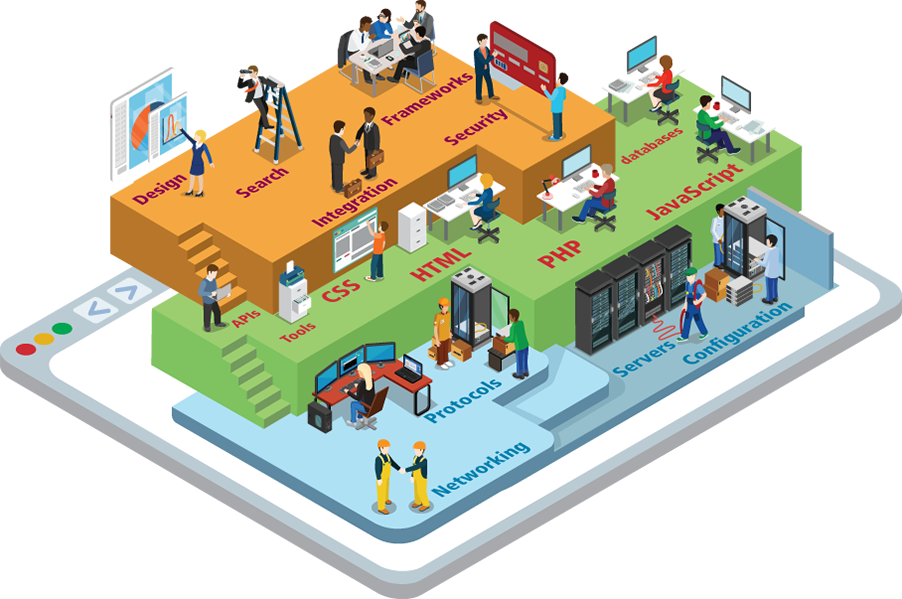

Lecture 1: Introduction to Web Development  The Web Development Ecosystem 1.1 A Complicated Ecosystem 1.2 Definitions and History 1.3 The client-Server Model 1.4 Where is the Internet? 1.5 Working in Web Development Special Feature: Virtual Field Trip Inside a Google Data Center